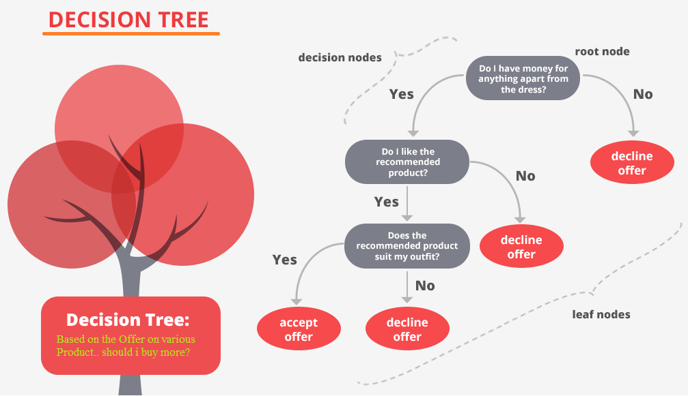
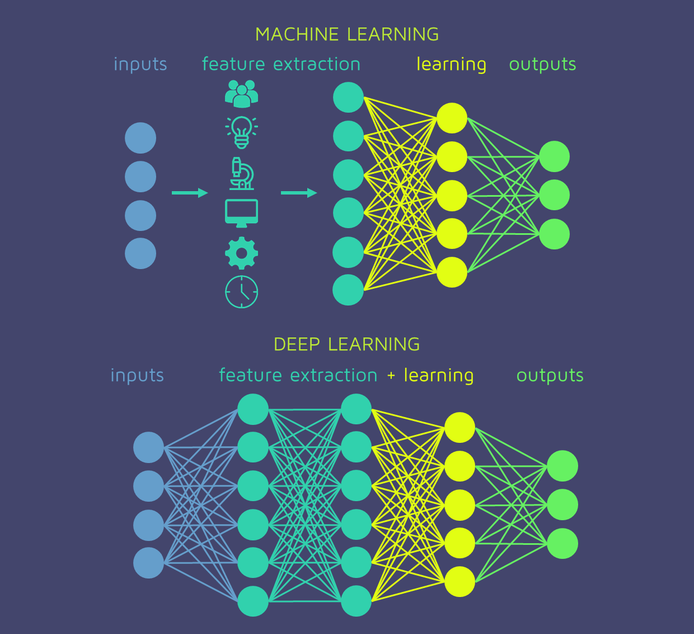

Technical Notes
Mathematics
"Mathematics is the alphabet with which God has written the universe."
- Donald in Mathemagic Land (1959)
Data Structures and Algorithms
"Changing a data structure in a slow program can work the same way an organ transplant does in a sick patient. But it is better to be born with a good heart than to wait for a replacement. The maximum benefit from good data structures results from designing your program around them in the first place."
- The Algorithm Design Manual, Steven Skiena
Computer Vision
"It is mind-boggling that all of the above inferences unfold from a brief glance at a 2D array of R,G,B values. The core issue is that the pixel values are just a tip of a huge iceberg and deriving the entire shape and size of the icerberg from prior knowledge is the most difficult task ahead of us. How can we even begin to go about writing an algorithm that can reason about the scene like I did?"
- The state of Computer Vision and AI: we are really, really far away. Andrej Karpathy (2012)

Machine Learning
"You do need some basic mathematics, but the main ingredients are common sense, a good visual intuition, and a desire to learn and to apply these methods to anything that you are passionate about."
- Luis Serrano, Grokking Machine Learning

Deep Learning
"Imaginations bring order out of chaos. Deep learning with deep imagination is the road map to AI springs and AI autumns."
- Amit Ray, Compassionate Artificial Superintelligence AI 5.0